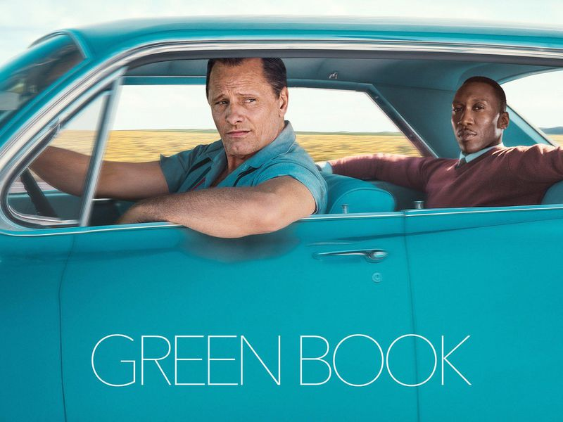

"Green book" är en film från 2018 som utspelas i 1962. Filmen handlar om uppbygnaden av vänskapen mellan Don Shirley, en berömd afroamerikan jazzspelare och Tony Vallelonga, en italiensk-amerikan dörrvakt som jobbade som Shirleys chaufför och livvakt. Igenom filmen ser man hur Tony och Shirley blir närmre och närmre varandra men samt hur de två olika liv är så olika från varandra. Medans Shirley är mer elegant och strukturerat, Tony lever mer frit och bryr sig mindre om vad folk tycker om han.
Handligen i filmen börjar med att Tony förlorar sitt jobb som en dörrvakt på en nattclub eftersom den måste renoveras. Desperat för ett jobb, går han till "doktor" Don Shirley för en jobbintervju. Shirley som är en berömd pianist anställer Tony för att vara hans chaufför och livvakt i de nästa 8 veckor för en turné genom den djupa södern. Tony tvekar i början eftersom han inte gillar att vara borta från sin familj så länge men han går med på det i slutet eftersom lönen är för bra för att säga nej.